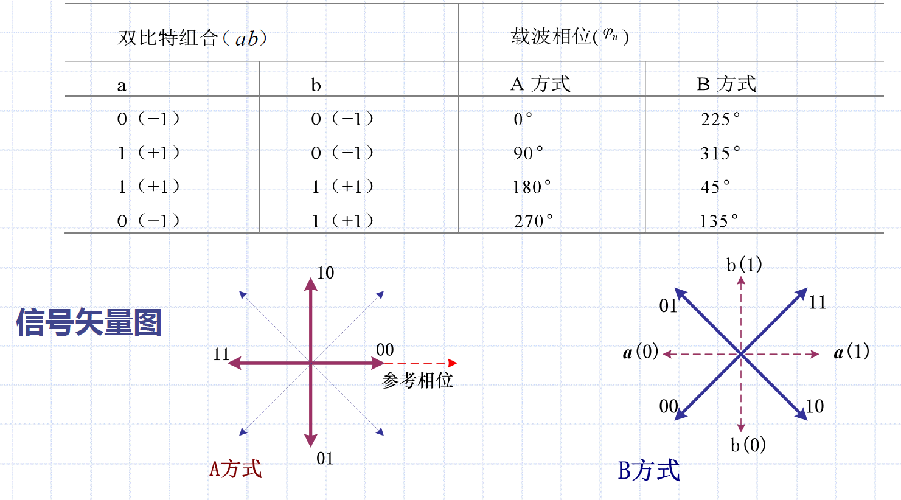

7 数字带通传输系统
7.0 引言
数字带通传输系统：包括调制和解调过程的数字传输系统
- 数字基带信号具有丰富的低频分量，无法在大多数具有带通特性的信道中传送
数字调制技术的两种方法：
- 利用模拟调制方法实现数字调制
- 利用数字信号的离散取值特点通过开关键控载波实现数字调制
- 振幅键控ASK
- 频移键控FSK
- 相移键控PSK
7.1 二进制数字调制原理
7.1.1 二进制振幅键控2ASK
振幅键控：利用载波的幅度变化传递数字信息
通-断键控OOK：\(e_{OOK}(t)=\begin{cases}Acos\omega_ct & 以概率P发送1\\ 0&以概率1-P发送0\end{cases}\)
2ASK信号一般表达式：
- \(e_{2AKS}(t)=s(t)cos\omega_ct\)
- \(s(t)=\sum_{n}a_ng(t-nT_B)\)
- 若\(a_n=\begin{cases}1\\ 0\end{cases}\)，2ASK即为OOK
- 产生方法：
- 模拟调制法（相乘器法）
- 键控法
- 解调方法：
- 非相干解调（包络检波法）
- 相干解调法（同步检测法）
- 劣势：受噪声影响很大；对于主要依赖振幅识别比特的ASK调制，噪声是很大的问题
2ASK功率谱密度：
- \(P_{2ASK}(f)=\frac{1}{4}[P_s(f+f_c)+P_s(f-f_c)]\)
- \(B_{2ASK}=2f_s\)，即2ASK信号带宽为基带信号带宽的2倍
- \(f_s=\frac{1}{T_s}=R_B\)
- 含有载波分量
7.1.2 二进制频移键控2FSK
二进制频移键控2FSK：频移键控利用载波的频率变化传递数字信息
2FSK信号一般表达式：
- \(e_{2FSK}(t)=s_1(t)cos\omega_1t+s_2(t)cos\omega_2t\)
- 产生方法：
- 模拟调频电路：此方法产生的2FSK信号在相邻码元之间的相位是连续变化的，称为连续相位FSK
- 键控法：由电子开关在两个独立的频率源之间转换，相邻码元之间的相位不一定连续
- 解调方法：
- 非相干解调（包络检波法）
- 相干解调法
- 其他：鉴频法、差分检测法、过零检测法

2FSK的功率谱密度：
- \(P_{2FSK}(f)=\frac{1}{4}[P_{s_1}(f+f_1)+P_{s_1}(f-f_1)]+\frac{1}{4}[P_{s_2}(f+f_2)+P_{s_2}(f-f_2)]\)
- 连续峰的形状随着两个载频之差的大小而变化
- \(|f_2-f_1|>2f_s\) -> 双峰
- \(|f_2-f_1|<2f_s\) -> 单峰
- \(B_{2FSK}=|f_2-f_1|+2f_s\)
7.1.3 二进制相移键控2PSK
二进制相移键控2PSK：利用载波的相位的绝对值变化传递数字信息，称为绝对相移方式
2PSK信号的一般表达式：
- \(e_{2PSK}=Acos(\omega_ct+\phi_n)=\begin{cases}Acos\omega_ct & P \\ -Acos\omega_ct & 1-P\end{cases}\)
- 产生方法：
- 模拟调制方法
- 键控法
- 解调方法：
- 相干解调
- 劣势：
- 2PSK载波恢复过程中存在180°相位模糊，即恢复的本地载波可能与所需相干载波同相或反相
- 随机信号码元序列可能出现连续正弦波形，导致无法辨认信号码元起止时刻
2PSK的功率谱密度：
- \(P_{2PSK}(f)=\frac{1}{4}[P_s(f+f_c)+P_s(f-f_c)]\)
- 仅当P=1/2时，谱中无离散谱（载波分量）
- \(B_{2PSK}=2f_s\)
7.1.4 二进制差分相移键控2DPSK
二进制差分相移键控2DPSK：利用 前后相邻码元的载波相对相位变化传递数字信息，称为相对相移键控
2DPSK基本原理：
- \(\Delta \phi=\phi_n-\phi_{n-1}= \begin{cases} 0 \rightarrow 1 \\ \pi \rightarrow 0 \end{cases}\)
- \(\Delta \phi=\phi_n-\phi_{n-1}= \begin{cases} 0 \rightarrow 0 \\ \pi \rightarrow 1 \end{cases}\)
- 产生方法：先对二进制数字基带信号进行差分编码，然后根据相对码进行绝对调相
- 解调方法：相干解调（极性比较法）加码反变化法
2DPSK的功率谱密度：
- \(P_{2DPSK}(f)=P_{2PSK}(f)=\frac{1}{4}[P_s(f+f_c)+P_s(f-f_c)]\)
- 仅当P=1/2时，谱中无离散谱（载波分量）
- \(B_{2PSK}=2f_s\)
7.2 二进制数字调制系统的抗噪声性能
解调器输入端信噪比：\(r=\frac{a^2}{2\sigma_n^2}\)
7.2.1 2ASK系统的抗噪声性能
2ASK系统的抗噪声性能：（相干解调）
- \(P(0)=P(1)\)时：
- \(b^*=\frac{a}{2}\)
- \(P_e=\frac{1}{2}erfc(\sqrt{\frac{r}{4}})\)，
- 当\(r>>1\)时，\(P_e\approx\frac{1}{\sqrt{\pi r}}e^{-r/4}\)
2ASK系统的抗噪声性能：（包络检波）
- \(P(0)=P(1)\)时：
- \(b^*=\begin{cases}\frac{a}{2} & r>>1 \\ \sqrt{2}\sigma_n & r<<1\end{cases}\)
- 当\(r>>1\)时，\(P_e=\frac{1}{4}erfc(\sqrt{\frac{r}{4}})+\frac{1}{2}e^{-r/4}\)
- 当\(r\rightarrow \infty\)时，\(P_e=\frac{1}{2}e^{-r/4}\)
7.2.2 2FSK系统的抗噪声性能
2FSK系统的抗噪声性能：
- 包络检波：
- \(P_e=\frac{1}{2}e^{-r/2}\)
- 相干解调：
- \(P_e=\frac{1}{2}erfc(\sqrt{\frac{r}{2}})\)
- 当\(r>>1\)时，\(P_e\approx \frac{1}{\sqrt{2\pi r}}e^{-r/2}\)
7.2.3 2PSK系统的抗噪声性能
2PSK信号的抗噪声性能：（相干解调）
- \(P(0)=P(1)\)时，
- \(b^*=0\)
- \(P_e=\frac{1}{2}erfc(\sqrt{r})\)
- 当\(r>>1\)时，\(P_e\approx \frac{1}{2\sqrt{\pi r}}e^{-r}\)
2DPSK信号的抗噪声性能：
- 相干解调：
- 当\(r>>1\)时，\(P_e\approx\frac{1}{\sqrt{\pi r}}e^{-r}\)
- 差分相干解调：
- \(P_e=\frac{1}{2}e^{-r}\)
7.3 二进制数字调制系统的性能比较
\[
\begin{aligned}
&r=\frac{a^2}{2\sigma_n^2} \\
&\sigma_n^2=n_0B=n_0\frac{2}{T_s} \\
\end{aligned}
\]

频带宽度：
- 2ASK：\(\frac{2}{T_B}\)
- 2FSK：\(|f_2-f_1|+\frac{2}{T_B}\)
- 2PSK：\(\frac{2}{T_B}\)
对信道特性变化的敏感性：
- 2ASK：\(b^*=\frac{a}{2}\)
- 易受信道参数变化的影响
- 不适于在变参信道中传输
- 2PSK：\(b^*=0\)
- 不易受信道参数变化的影响
- 2FSK：
- 不需要人为设置判决门限，对信道 变化不敏感，适用于变参信道传输
性能比较总结：
- 目前最常用的时相干2DPSK和非相干2FSK
- 相干2DPSK适合中速数据传输
- 非相干2FSK用于中低速数据传输，尤其适合变参信道
7.4 多进制数字调制原理
需求背景：
- 二进制数字调制局限性：每个码元只传输1 b数据，频带利用率低
- 需要提高频带利用率
码元传输速率 & 信息传输速率：
- 多进制码元进制数M，一个码元中包含k 比特信息，则有\(k=\log_2 M\)
- 设\(R_B\)为码元传输速率，\(R_b\)为信息传输速率，则有\(R_b=R_B\log_2 M\)
- 键控体制的信噪比\(r=\frac{a^2}{2\sigma_n^2}\)
- 若将码元功率平均分给多进制码元的每个比特，则每比特信噪比\(r_b=\frac{P_b}{\sigma_n^2}=\frac{r}{k}\)
- 信噪比下降，误码率上升
多进制振幅键控MASK：
- 信号谱零点带宽与2ASK相同，是数字基带信号的2倍
- 信息传输速率相同时，码元传输速率为2ASK的\(\frac{1}{\log_2 M}\)
- \(B=\frac{2}{T_s}=2R_B=\frac{B_{2ASK}}{\log_2 M}\)
多进制频移键控MFSK：
- M进制数字频率调制信号带宽近似为\(B=|f_M-f_1|+\frac{2}{T_s}\)
四进制相移键控4PSK：
- 4PSK也称为正交相移键控QPSK，利用载波的4种不同相位表示数字信息
- QPSK的每种载波代表两个比特，将两个比特的组合即为a路和b路
- 两种调制方式：
- 正交调相法：QPSK可看作两个互为正交的2PSK信号合成
- 相位选择法：逻辑选相电路选择某个相位的载波输出
- 解调方法：可分解为2路2PSK解调
- 缺陷：
- 相邻码元的最大相位差为180°
- 相位突变在频带受限系统中导致信号包络有很大起伏，并产生包络零点
- 频谱扩展大，旁瓣对相邻信道干扰大
- 改进：
- 偏置QPSK（OQPSK）
- 将两个正交分量的2比特a和b在时间上错开半个码元，使之不可同时改变
- \(\frac{\pi}{4}\)相移QPSK
- 由两个相差\(\pi/4\)的QPSK星座图交替产生
- a组只能跳往B组，反之亦然

四进制差分相移键控4DPSK：

7.5 多进制数字调制系统的抗噪声性能
见教材P215